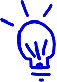

DANO
2 место
Тинькофф × ВШЭ · анализ данных
Датасет:
226 тыс. заявок клиентов Тинькофф Банка на кредитование, март 2021 — ноябрь 2022.
Вопрос:
какие характеристики клиента определяют выбор вида кредита — без залога, под залог авто или под залог недвижимости.

Гипотеза и проверка:
«чем старше клиент, тем чаще он берёт кредит под залог недвижимости» не подтвердилась тестом Крускала-Уоллиса (p ≈ 0.4) — устойчиво в 3 подгруппах.
Рекомендация банку:
не таргетировать залоговые продукты по возрасту, а определять владение недвижимостью напрямую.
Моя роль:
выбрала тест Крускала-Уоллиса для проверки гипотезы, проверила устойчивость результата на подгруппах, довела нулевой результат до практической рекомендации банку.